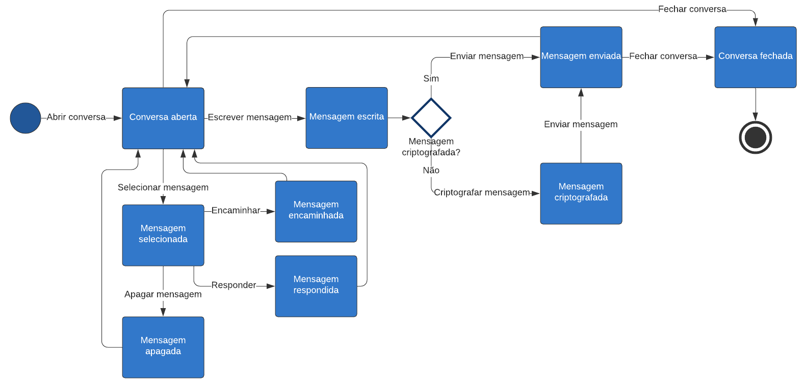

Documentação da arquitetura do aplicativo para Android Signal
Autor
Este documento foi produzido por Ezequias de Oliveira Rocha.
- Matrícula: 118110753
- Contato: ezequias.rocha@ccc.ufcg.edu.br
- Projeto documentado: https://github.com/signalapp/Signal-Android
Descrição Arquitetural – Signal Android
Este documento descreve parte da arquitetura do aplicativo para android Signal. Essa descrição foi baseada principalmente no modelo C4.
Descrição Geral sobre o aplicativo Signal
Signal é um aplicativo de mensagens para comunicação privada simples com amigos.
O Signal usa a conexão de dados do seu telefone (WiFi/3G/4G) para se comunicar com segurança, opcionalmente suporta SMS/MMS simples para funcionar como um mensageiro unificado e também pode criptografar as mensagens armazenadas no seu telefone.
O aplicativo para Android Signal
Objetivo Geral
Implementar um aplicativo de comunicação instantânea com vídeo chamada e chamada de voz criptografadas.
Contexto
Abaixo, é possível observar o diagrama de contexto do sistema. Nele, temos como base a aplicação Android, na qual o usuário pode interagir, e dois sistemas de pagamento (DonorBox e The Giving Block) para os usuários que desejam realizar doações.
Ademais, a aplicação se conecta ao Signal-Server, que gerencia o registro de novas contas, armazena e distribui as chaves públicas dos clientes, transmite as mensagens criptogradas e que, entre outras funcionalidades, utiliza o Firebase Cloud Messaging para fazer envio de notificações para aplicativos instalados em dispositivos que utilizam o sistema operacional Android.

Containers
Abaixo, observamos o diagrama de container para a aplicação Signal:

O meio de acesso ao Signal é feito a partir de um aplicativo móvel que acessa todas as suas funcionalidades. O aplicativo móvel faz conecção com um servidor do Signal através de uma API implementada pelo Signal-Service.
Além disso, todas as mensagens enviadas pelo Signal são armazenadas localmente no dispositivo do usuário em um banco de dados SQLite.
Componentes
Abaixo, é possível observar o diagrama de componentes do sistema:

No diagrama, tem-se alguns dos principais compoentes do sistema:
- Payments: Responsável por se conectar com os dois sistemas externo utilizados pelos usuários para realizar doações, o DonorBox e o The Giving Block;
- Storage: Responsável por gerenciar o armazenamento de mensagens e arquivos de mídia;
- Messages: Responsável por enviar, receber e processar as mensagens e arquivos de mídia;
- Notifications: Responsável por gerenciar as notificações recebidas, conecções com os canais de notificação e as funcionalidades permitidas a partir delas;
- Crypto: Responsável por criptografar e descriptografar todas as informações enviadas, recebidas e armazenadas.
Visão de Informação
A conversa é primeiramente aberta pelo usuário. Em seguida, o usuário poderá escrever uma mensagem, que será criptografada, e enviá-la para outro usuário.
Após a conversa ser aberta, o usuário também pode selecionar uma mensagem, o que lhe dará algumas opções: encaminhar, responder e apagar a mensagem. Por fim, o usuário pode fechar a conversa.
